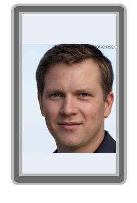
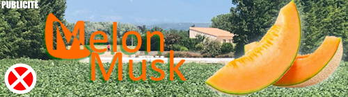

Raphaël Hidier naît le 19 Août 2009 à Lem, au Danemark. Abandonné très jeune dans une villa par son père, Maxence Hidier, il développe une ambition dévorante pour devenir l'ingénieur le plus légendaire de l'ère moderne. Avant de rejoindre l'automobile, il s'illustre par différente participation notoire au Concours Backshot .
Hidier rejoint le "Projet Cyclosphere" en juin 2030, aux côtés de Gabriel Frouard et Aloïs Barraud. En tant qu'ingénieur de génie, il est le designer principal du premier grand succès commercial de l'entreprise : la "SkyMotors : BreakShot".
Le 2 juin 2038, suite à l'accident impliquant Lucien Dubreuil, Aloïs Barraud est évincé de la direction. Raphaël Hidier est immédiatement promu Directeur Général par Frouard. Il exprime souvent un malaise après avoir était propulsé de cette manière, mais il embrasse son rôle avec fierté depuis l'incident.
